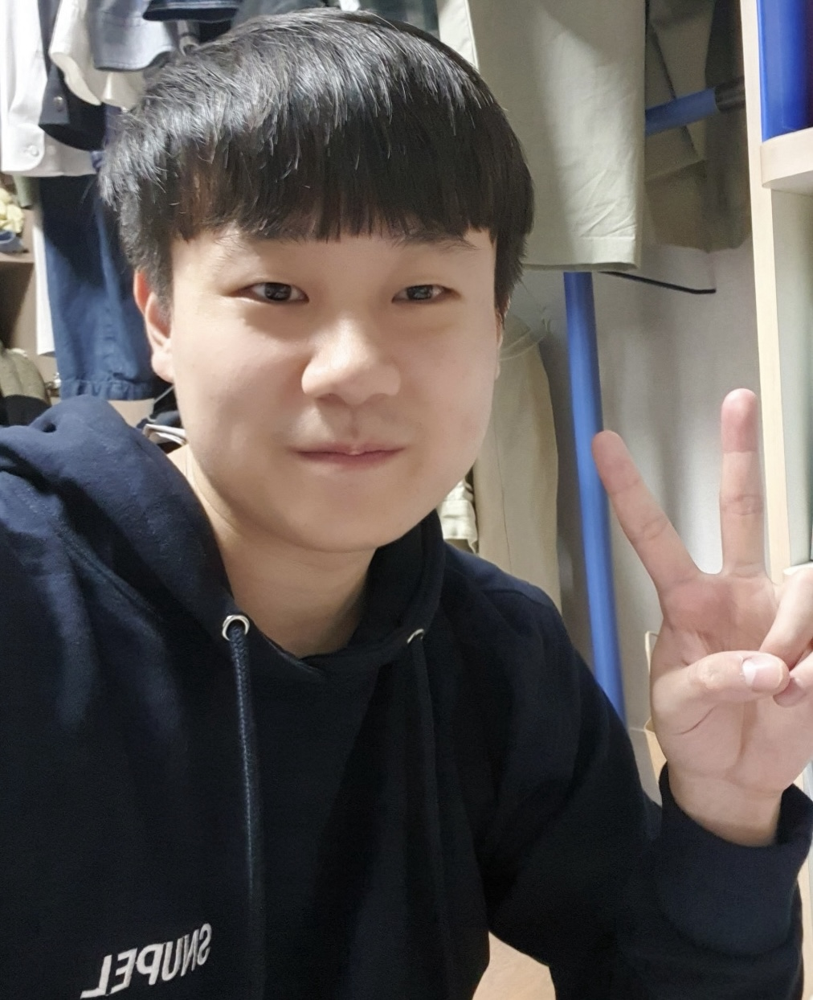

M.S. Candidate
Production Engineering Lab (PEL)
Naval architecture & Ocean engineering
Seoul University (SNU)
GitHub: SeungwooHH11
Email: nimp91 [at] snu.ac.kr
Phone: (+82) 010-7154-9715
Address: 1, Gwanak-ro, Gwanak-gu, Seoul, Republic of Korea 08826
"Only those who dare to fail greatly can ever achieve greatly."
💡 Research Interests: reinforcement learning, combinatorial optimization, scientific computing.
I'm a second year Ph.D. in the Industrial & Systems Engineering department (ISysE) at Korea Advanced Institute of Science & Technology (KAIST). I'm doing research with my colleagues at the Systems Intelligence Laboratory (SILab) suprevised by Prof. Jinkyoo Park. I am also working with great peers at the AI4CO open source group and the DiffEqML open source group.
The primary focus of my ongoing research is the development of reinforcement learning (RL) algorithms for the study of combinatorial optimization (CO) problems. We create an extensive open-source benchmark RL4CO to provide a unified framework for RL-based CO algorithms, and to facilitate reproducible research in this field, decoupling the science from the engineering. I also explore machine learning methods for dynamical physical system simulation, scientific computing, and trajectory prediction. Recent interests include reinforcement learning for continuous dynamical system control, robot navigation and high efficient complex physical system simulation.
📅 Last Update: 2024.11.25.